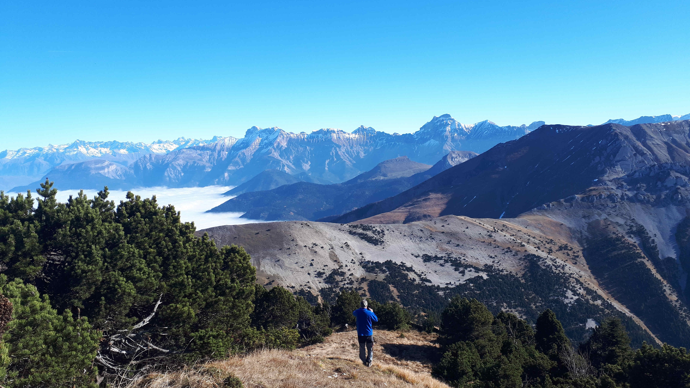

Section Randonnée
Responsables : Claude PETTMAN, Jean-Paul TABOYAN
à pied ou en raquettes
06 89 66 28 21
sorties ponctuelles : nuit / journée / week-end
Vercors
Depuis la création de l’association en 1995, le trekking et les sorties en raquettes en moyenne montagne ont été organisés ponctuellement souvent sur la durée de 3 à 4 jours.
En 2018 nous avons relancé la randonnée après un temps sabbatique en accueillant des demandeurs d’asile.
Les sorties que nous proposons plus récemment ont une difficulté moyenne moins de 1000m de dénivelés et pour des marcheurs qui ont l’habitude d’accumuler plus de 6 heures de randonnée.
la demande nous pouvons vous soumettre des nuitées en refuge non gardé ou bien en gîte.
Pour plus de renseignements, prenez contact auprès du Président.